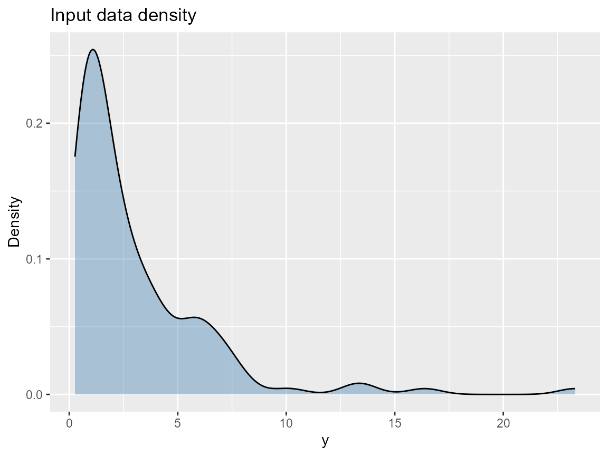

Installation, Reproducibility, and Package Structure
Source:vignettes/v01-installation-reproducibility.Rmd
v01-installation-reproducibility.RmdWhat you’ll learn: how to install DPmixGPD consistently, reproduce MCMC draws via seeds and thinning, and locate the bundle/prediction/engine pieces inside the package.
Installation options
-
CRAN (preferred for most users): run
install.packages("DPmixGPD")after the package appears. - GitHub (latest features):
if (!requireNamespace("remotes", quietly = TRUE)) remotes::install.packages("remotes")
remotes::install_github("fsu-dpmixgpd/DPmixGPD") # placeholder repo URL-
Nimble note: DPmixGPD relies on Nimble’s code
generation.
nimble::nimbleOptionscan control compilation flags, so set reproducible values before runningrun_mcmc_bundle_manual().
Reproducibility checklist
- Pass
seedvalues forbuild_nimble_bundle()andrun_mcmc_bundle_manual()chains (mcmc$niter,nburnin,nchains,thinas deterministic lists). - Fix
plan()for futures if usingfuture::plan()in parallel chains; the package usesfuture.applyunder the hood. - Save the returned object (
mixgpd_fit) and rerun summaries/predict using the same seed list to avoid jitter.
Package architecture map
| Area | Key functions | Purpose |
|---|---|---|
| Bundle builder |
build_nimble_bundle(),
build_causal_bundle()
|
Creates Nimble nodes and mixture layout (SB or CRP) with J components, a kernel, and optional GPD tail. |
| Prediction + diagnostics |
predict.mixgpd_fit(), cqte(),
summary.mixgpd_fit()
|
Compute quantiles, plotting data, and tail comparisons using the same mixture weights as estimation. |
| Kernel registry |
get_kernel_registry(),
init_kernel_registry()
|
Lists the supported kernels (e.g., gamma,
lognormal, normal) and their parameter
shapes. |
| Backend engine |
run_mcmc_bundle_manual(),
run_mcmc_causal()
|
Executes Nimble MCMC with SB or CRP latent structures plus any causal stacking. |
| Utilities |
sim_*() helpers, get_tail_registry()
|
Simulated datasets for tutorials and tail-specific metadata. |
Common pitfalls
| Symptom | Likely cause | Fix |
|---|---|---|
| “Model not fully initialized” | Some latent nodes were left NULL
|
Supply explicit components/J,
GPD, and kernel priors in the bundle call before running
MCMC. |
| Dimension mismatch in newdata | Covariate names differ or missing | Always pass a data.frame whose column names match the
ones used in build_nimble_bundle() (case sensitive). |
| Positivity warning in causal | Overlap poor for treated vs control | Check propensity scores and consider trimming rare regions before drawing CQTE curves. |
Quick reproducible example
y <- sim_bulk_tail(n = 120, seed = 42)
if (use_cached_fit) {
fit <- fit_small
} else {
bundle <- build_nimble_bundle(
y = y,
backend = "sb",
kernel = "gamma",
GPD = TRUE,
J = 5,
mcmc = list(niter = 200, nburnin = 50, thin = 2, nchains = 2, seed = c(1, 2))
)
fit <- run_mcmc_bundle_manual(bundle)
}
print(fit)
#> MixGPD fit | backend: Stick-Breaking Process | kernel: Normal Distribution | GPD tail: FALSE
#> n = 80 | components = 3 | epsilon = 0.025
#> MCMC: niter=60, nburnin=20, thin=1, nchains=1
#> Fit
#> Use summary() for posterior summaries; plot() for diagnostics; predict() for predictions.The print() output reiterates the backend, kernel, J
components, and the GPD flag (TRUE/FALSE). The bundle
bundler never leaves the latent parameter initialization to chance.
Diagnostic plot
data.frame(y = y) |>
ggplot(aes(x = y)) +
geom_density(fill = "steelblue", alpha = 0.4) +
labs(title = "Input data density", x = "y", y = "Density")
Troubleshooting checklist
- Confirm the target data fit the kernel domain (e.g., positive for
gamma,lognormal). - Inspect
fit$thresholdandfit$tail_shapefor GPD instabilities. - Re-run with more burn-in and thinning when chains mix poorly.
Session info
sessionInfo()
#> R version 4.5.2 (2025-10-31 ucrt)
#> Platform: x86_64-w64-mingw32/x64
#> Running under: Windows 11 x64 (build 26100)
#>
#> Matrix products: default
#> LAPACK version 3.12.1
#>
#> locale:
#> [1] LC_COLLATE=English_United States.utf8
#> [2] LC_CTYPE=English_United States.utf8
#> [3] LC_MONETARY=English_United States.utf8
#> [4] LC_NUMERIC=C
#> [5] LC_TIME=English_United States.utf8
#>
#> time zone: America/New_York
#> tzcode source: internal
#>
#> attached base packages:
#> [1] stats graphics grDevices datasets utils methods base
#>
#> other attached packages:
#> [1] ggplot2_4.0.1 nimble_1.4.0 DPmixGPD_0.0.8
#>
#> loaded via a namespace (and not attached):
#> [1] sass_0.4.10 future_1.68.0 generics_0.1.4
#> [4] renv_1.1.5 lattice_0.22-7 listenv_0.10.0
#> [7] pracma_2.4.6 digest_0.6.39 magrittr_2.0.4
#> [10] evaluate_1.0.5 grid_4.5.2 RColorBrewer_1.1-3
#> [13] fastmap_1.2.0 jsonlite_2.0.0 scales_1.4.0
#> [16] codetools_0.2-20 numDeriv_2016.8-1.1 textshaping_1.0.4
#> [19] jquerylib_0.1.4 cli_3.6.5 rlang_1.1.6
#> [22] parallelly_1.46.0 future.apply_1.20.1 withr_3.0.2
#> [25] cachem_1.1.0 yaml_2.3.12 otel_0.2.0
#> [28] tools_4.5.2 parallel_4.5.2 coda_0.19-4.1
#> [31] dplyr_1.1.4 globals_0.18.0 vctrs_0.6.5
#> [34] R6_2.6.1 lifecycle_1.0.4 fs_1.6.6
#> [37] htmlwidgets_1.6.4 ragg_1.5.0 pkgconfig_2.0.3
#> [40] desc_1.4.3 pillar_1.11.1 pkgdown_2.2.0
#> [43] bslib_0.9.0 gtable_0.3.6 glue_1.8.0
#> [46] systemfonts_1.3.1 tidyselect_1.2.1 tibble_3.3.0
#> [49] xfun_0.55 rstudioapi_0.17.1 knitr_1.51
#> [52] farver_2.1.2 htmltools_0.5.9 igraph_2.2.1
#> [55] labeling_0.4.3 rmarkdown_2.30 compiler_4.5.2
#> [58] S7_0.2.1